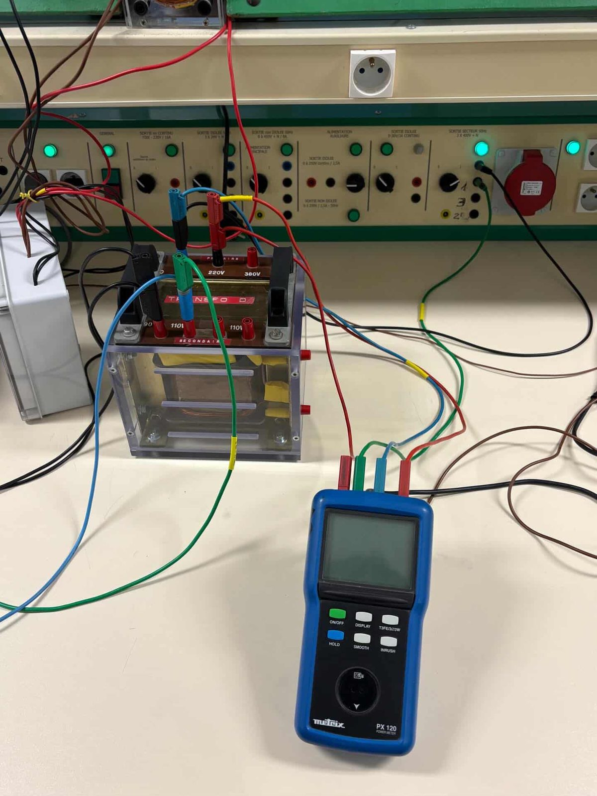

Appliquer une procédure d'essais
C'est quoi en fait ?
Appliquer une procédure d'essais, c'est suivre rigoureusement un protocole de mesure : configurer les instruments (oscilloscope, multimètre, GBF), relever les valeurs, comparer aux résultats attendus, et consigner le tout dans un compte-rendu.
Comment je l'ai pratiquée
Polarisation de diodes et caractérisation d'un transistor NPN
Avec Thomas Baudrey, nous avons appliqué la procédure complète : mesure des tensions de seuil (0,5 V pour la diode, 2 V pour la LED verte), vérification de l'état passant ou bloqué selon le sens de polarisation, puis caractérisation du transistor bipolaire NPN avec un signal d'entrée triangulaire pour observer VCE en fonction de VE à l'oscilloscope (CH1 = VE, CH2 = VCE). Le gain β mesuré était compris entre 100 et 600, ce qui correspond bien à la datasheet.
Détecteur de seuil et trigger non-inverseur
Étude au GBF et à l'oscilloscope d'un détecteur de seuil inverseur, puis d'un trigger non-inverseur. Mesure des caractéristiques de transfert V2 = f(V1), calcul théorique des seuils Vt+ = +Vsat × (R1/R2) et Vt− = −Vsat × (R1/R2), puis comparaison avec les valeurs mesurées (≈ ±1,5 V).
Diagrammes de Bode, filtrage
Plusieurs séances ont porté sur le tracé de diagrammes de Bode à différentes fréquences (1 kHz, 10 kHz et plus), avec un fichier Excel bode.xlsx pour le post-traitement des relevés.
Mesures de puissance et observation à l'oscilloscope
Manipulations sur transformateur monophasé 220/110 V avec wattmètre Metrix PX 120 (mesure de P, Q, S au primaire), puis étude du redressement monophasé : pont à diodes alimenté par autotransformateur, observation à l'oscilloscope Fluke 190-204 de la tension redressée puis filtrée par condensateur. → Voir la galerie photos
Mes preuves

Où j'en suis
Pour moi c'est MS (maîtrise satisfaisante). Je suis à l'aise avec l'oscillo, le multimètre et le GBF, et je rends mes comptes-rendus dans les temps. Le truc c'est que je suis toujours guidé par l'énoncé du TP — l'année prochaine j'aimerais arriver à proposer moi-même la démarche de mesure, sans qu'on me la donne.